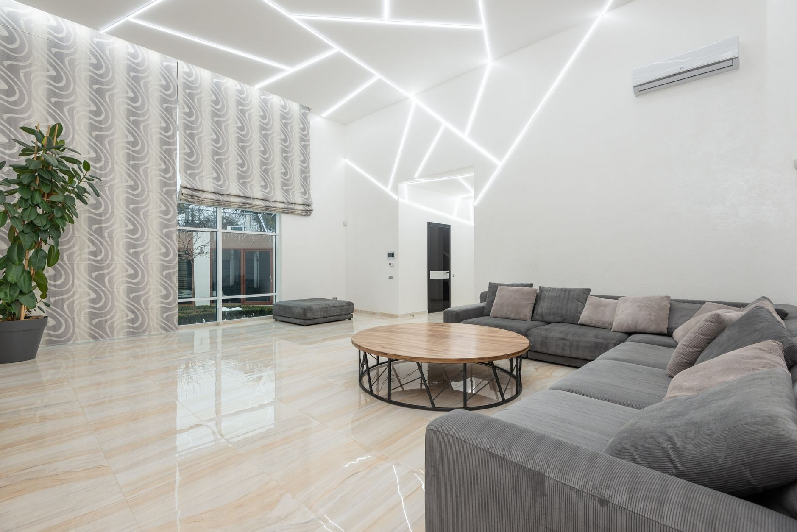
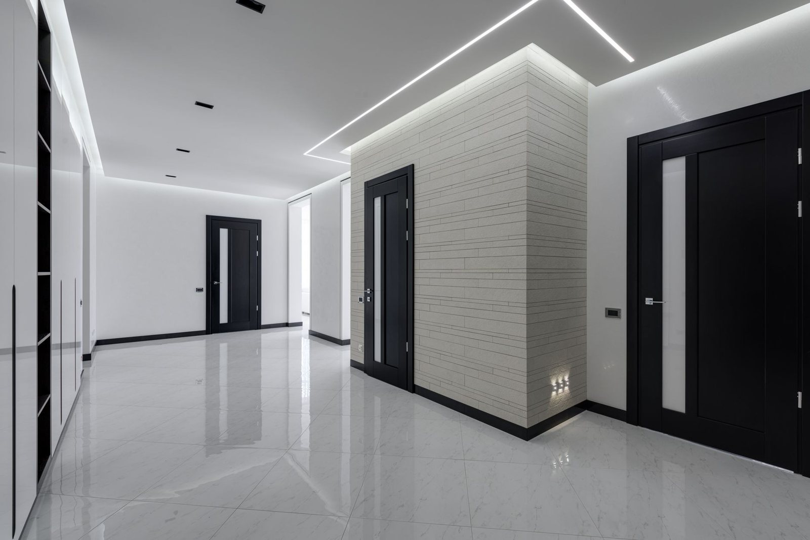
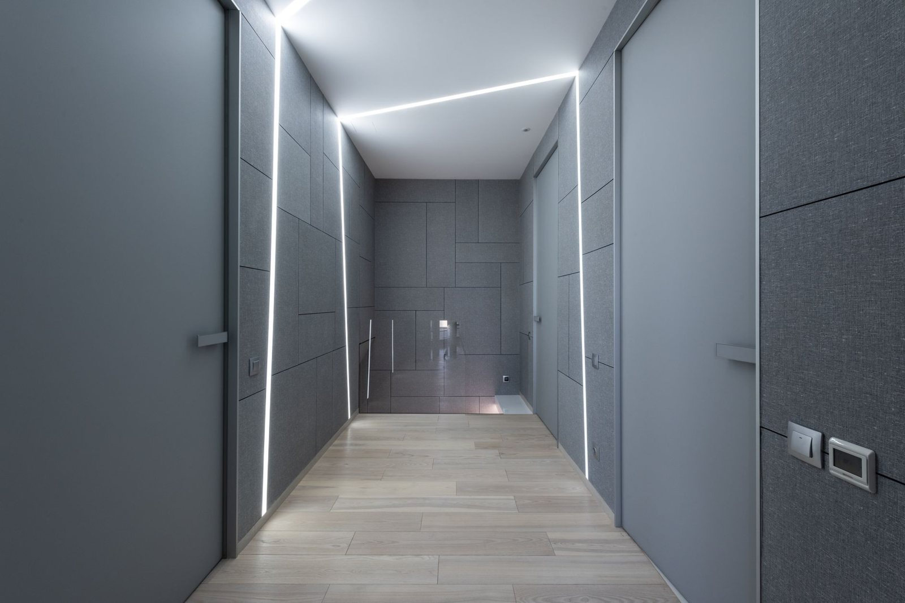
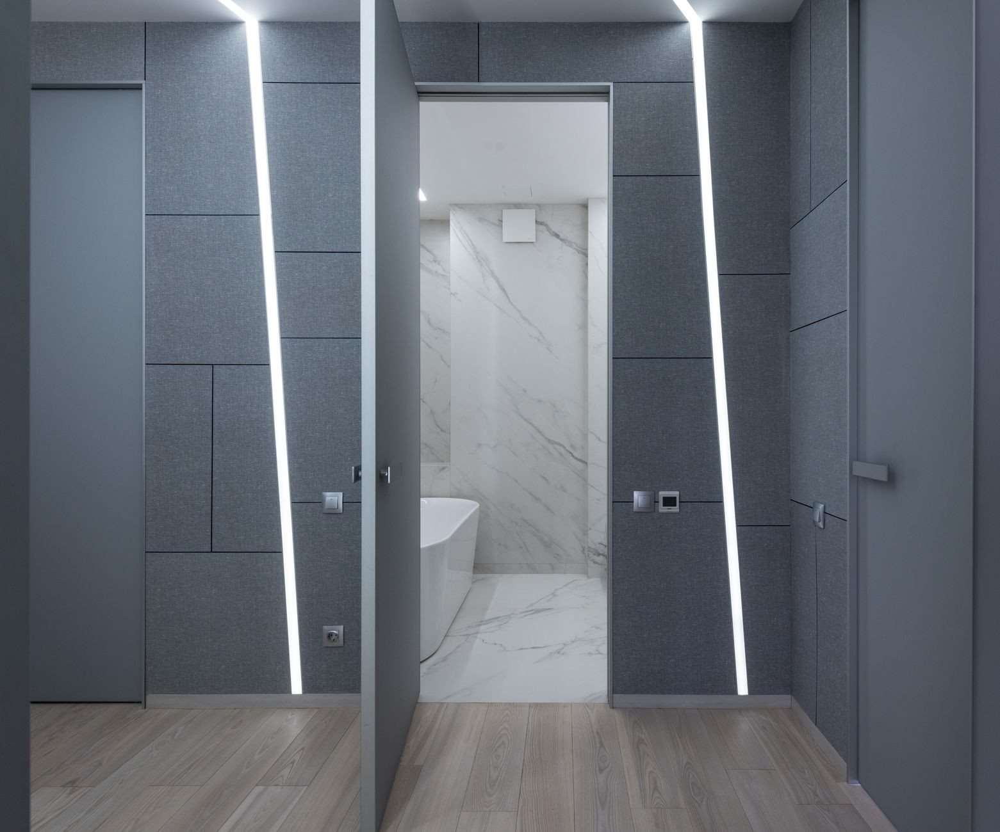

Instalacje elektryczne, pomiary, awarie.
Od wymiany gniazdka po kompleksową instalację twojej firmy.
Zadzwoń terazSVG+48604580352 +48 604 580 352- Zapytaj, wycenimy
- Śląsk, opolskie, dolnośląskie
- Uprawnienia SEP: eksploatacja, dozór, pomiary
„Skorzystałem z usługi Pana Mateusza, montował automatykę bramy zewnętrznej oraz oświetlenie na ogrodzie wra…”Piotr Wójtowicz
„Szybko, taniej w porównaniu do innych firm, wykonanie godne polecenia.”Tomasz Mazur
„Polecam usługi firmy Mat-Mar.”Alicja
Wiesz, na czym stoisz - na każdym etapie
Od pierwszego telefonu do protokołu z pomiarów - krok po kroku.
- 01
Dzwonisz
Mówisz, co masz do zrobienia albo co przestało działać. Przy awarii podpowiem przez telefon, co wyłączyć od razu - zanim dojadę, ma być bezpiecznie.
- 02
Oglądam i wyceniam
Widełek nie podaję, bo każda hala i każdy rozdział wygląda inaczej. Zapytaj - przyjadę, obejrzę i wycenię konkret.
- 03
Robota
Przy pracy na ruchu produkcyjnym ustalamy okno postojowe z wyprzedzeniem, żeby linia stanęła raz, a nie trzy razy.
- 04
Pomiary i protokół
Na koniec mierzę i pokazuję wynik - dostajesz protokół z pomiarów, podpisany, do odbioru i do dokumentacji.
Co robię
Większość roboty to instalacje przemysłowe i pomiary linii technologicznych. Pełny opis znajdziesz w ofercie.
- Instalacje elektryczneZasilanie hal, rozdzielnice, trasy kablowe i instalacja obiektowa - od projektu rozdziału po pomiary przed odbiorem.Zobacz →
- Automatyka bramowa BenincaDobór, dostawa i montaż. Napędy, szlabany, słupki parkingowe i bramy przemysłowe - jako autoryzowany przedstawiciel, dystrybutor i serwis marki.Zobacz →
- Pomiary okresowe instalacji i urządzeńPomiary linii technologicznych, maszyn i instalacji obiektowej, z protokołem do dokumentacji zakładu i do ubezpieczyciela.Zobacz →
- Kompensacja mocy biernejOpłaty za moc bierną na fakturze potrafią być wyższe niż sam prąd. Dobieram i montuję baterie kondensatorów pod realny pobór zakładu.Zobacz →
- Alarmy i kontrola dostępuCzujki, sygnalizacja i powiadomienie na telefon, a w zakładzie kontrola dostępu - wiadomo, kto i o której wszedł.Zobacz →
- Monitoring wizyjny i wideodomofonyKamery pod wjazdem, na hali i przy furtce, obraz na telefonie, nagrania na rejestratorze u Ciebie na miejscu.Zobacz →
- Sieci komputeroweOkablowanie strukturalne, szafy i punkty dostępowe. Sieć ciągnięta razem z instalacją elektryczną, nie doklejana potem po wierzchu.Zobacz →
- Awarie i usterkiStanęła linia albo zgasła połowa obiektu? Szukam przyczyny obwód po obwodzie i usuwam ją, a nie podnoszę bezpiecznik „na próbę”.Zobacz →
Zdjęcia z realizacji
Rozdzielnice, trasy kablowe, pomiary - stan z dnia oddania, bez upiększania.



Co mówią klienci
Skorzystałem z usługi Pana Mateusza, montował automatykę bramy zewnętrznej oraz oświetlenie na ogrodzie wraz ze sterowaniem. Fachowo i za rozsądne pieniądze w porównaniu do innych firm. PolecamPiotr Wójtowicz
Szybko, taniej w porównaniu do innych firm, wykonanie godne polecenia. Robili mi instalację w domu i jestem bardzo zadowolony, dobry kontakt, doradztwo i przede wszystkim fachowe wykonanie. Są na czasie z wszystkimi nowinkami w branży.Tomasz Mazur
Polecam usługi firmy Mat-Mar. Doświadczenie, profesjonalna wiedza, staranność w realizacji oraz terminowość zadania.Alicja
Dojeżdżam do Ciebie
Pracuję na Śląsku, w opolskiem i na Dolnym Śląsku. Baza jest w Kędzierzynie-Koźlu, ale przy większych zleceniach przemysłowych dojeżdżam dalej - wystarczy zapytać przy telefonie.
- Kędzierzyn-Koźle
- śląskie
- opolskie
- dolnośląskie
Dobrze wiedzieć
Ile to będzie kosztowało?
Sztywnych stawek nie podaję, bo każdy obiekt liczy się inaczej - inaczej hala produkcyjna, inaczej biuro, inaczej sama brama. Zapytaj, wycenimy: opowiedz przez telefon, co trzeba zrobić, a przy większych robotach przyjadę i obejrzę na miejscu.
Pracujesz dla firm czy dla domów?
Dla jednych i drugich, ale większość roboty to instalacje przemysłowe i pomiary linii technologicznych. Dom czy mieszkanie też zrobię - po prostu rzadziej.
Jakie masz uprawnienia?
SEP eksploatacyjne, dozorowe i pomiarowe. Pomiary podpisuję własnym nazwiskiem, więc protokół jest pełnoprawnym dokumentem do odbioru i do ubezpieczyciela.
Czy jesteś autoryzowanym przedstawicielem Beninki?
Tak - jestem przedstawicielem, dystrybutorem i serwisem automatyki bramowej BENINCA. Sprzęt mam z pierwszej ręki, a serwisuję też napędy, których nie montowałem.
Czy pracujesz sam?
Przy większych instalacjach pracuję ze stałymi współpracownikami, więc na hali robi kilka osób naraz. Ustalenia i wycenę prowadzę osobiście.
Czy da się zrobić bez zatrzymywania produkcji?
Część prac tak, część wymaga postoju. Ustalamy okno z wyprzedzeniem i przygotowuję wszystko wcześniej, żeby linia stanęła raz, na możliwie krótko.
Awaria? Jestem pod telefonem.
Szybki dojazd na pilne zgłoszenia.
Zapytaj, wycenimy.
Zadzwoń lub napisz - obejrzę, powiem co i jak, i podam konkretną cenę. Bez zobowiązań.